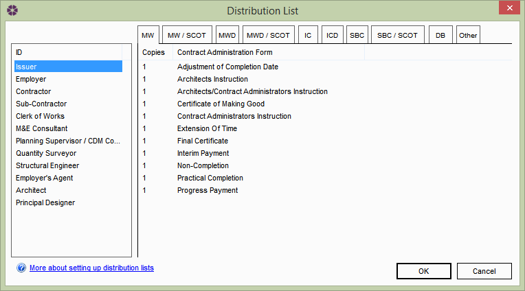

Global Distribution List |
NBS Contract Administrator ships with default Distribution Lists for each form and company Role. These default Distribution Lists define who should receive which type of form, and how many copies of each form. The value can be adjusted accordingly.
To view or edit the default Distribution List, select Tools > Distribution List from the main menu and the following window will appear:

The company Roles are listed on the left hand side of the window, while the Form of Contracts appear as tabs across the top. Clicking into each tab will list the relevant Forms for that contract underneath.
To assign to correct amount of forms for each Role, select the appropriate Role from the list and click into the relevant cell in the copies column. The number should highlight allowing the user to edit it. Once the changes have been made, click OK to save and close the window.
The information contained in the Global Distribution List informs the Form Distribution Lists on the active job.
See also:
Form Distribution List
Transmittal Sheet